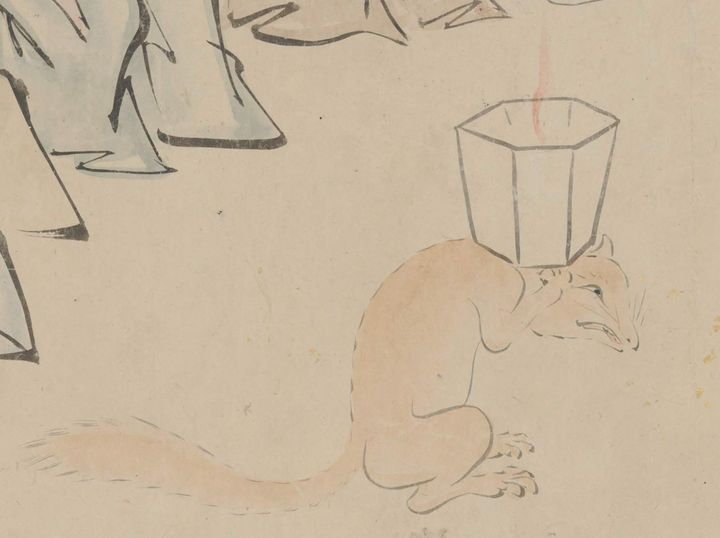

← 图鉴索引

狐が、火の付いた行灯の傘を首の上に置き、両手でそれを支えている。
出典：親書誌：U426_nichibunken_0435：［妖怪絵巻］／日付：2017／資源識別子：U426_nichibunken_0435_0001_0010
Copyright (c)2010- International Research Center for Japanese Studies, Kyoto, Japan. All rights reserved.